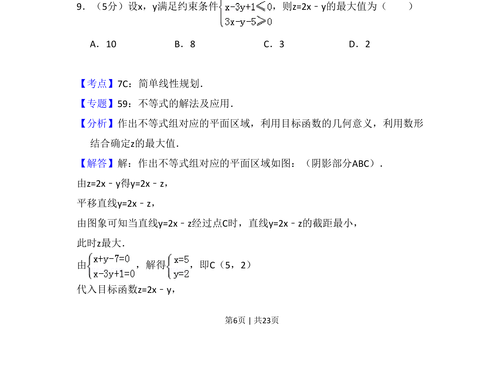
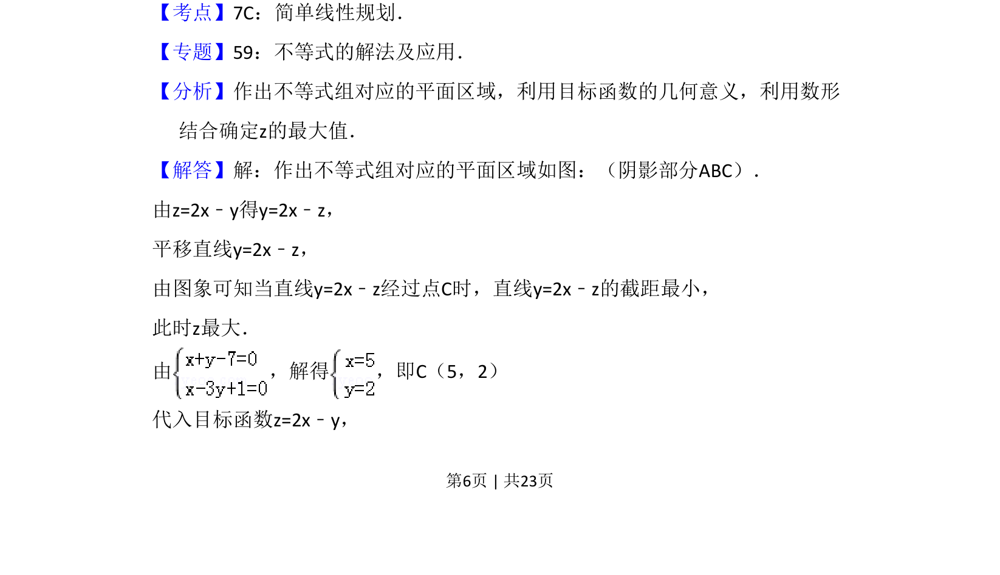
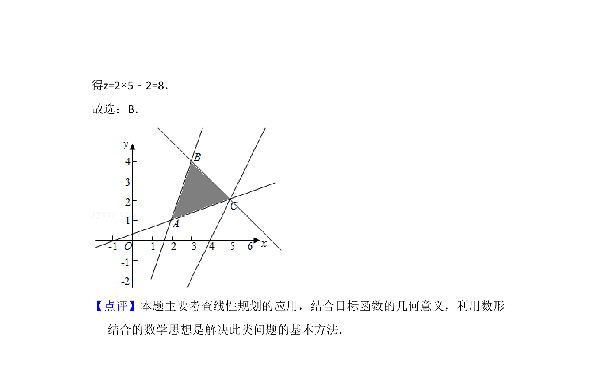

考点：线性规划 数形结合 目标函数最值

本题主要考查利用线性规划求目标函数的最大值，需要画出可行域并平移直线。


📄 原 PDF 第 6 页：
素材/真题/吉林/2008-2024·（吉林）数学高考真题/2014年高考数学试卷（理）（新课标Ⅱ）（解析卷）.pdf
9．（5分）设x，y满足约束条件 ，则z=2x﹣y的最大值为（ ） A．10 B．8 C．3 D．2
【考点】7C：简单线性规划．菁优网版权所有 【专题】59：不等式的解法及应用． 【分析】作出不等式组对应的平面区域，利用目标函数的几何意义，利用数形 结合确定z的最大值． 【解答】解：作出不等式组对应的平面区域如图：（阴影部分ABC）． 由z=2x﹣y得y=2x﹣z， 平移直线y=2x﹣z， 由图象可知当直线y=2x﹣z经过点C时，直线y=2x﹣z的截距最小， 此时z最大． 由 ，解得 ，即C（5，2） 代入目标函数z=2x﹣y，